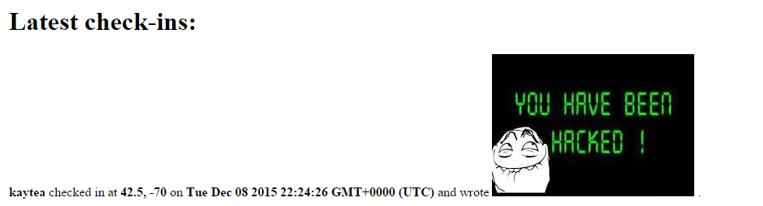
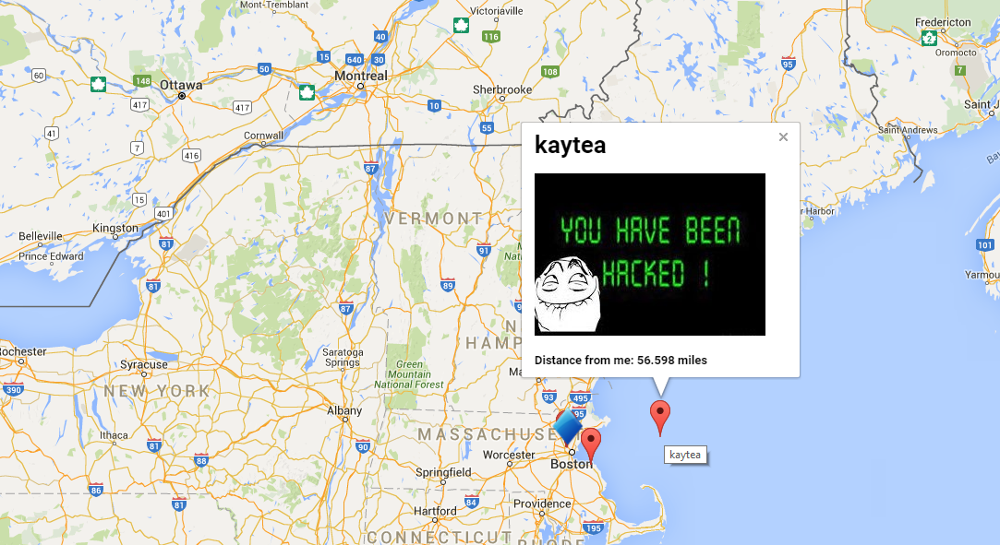
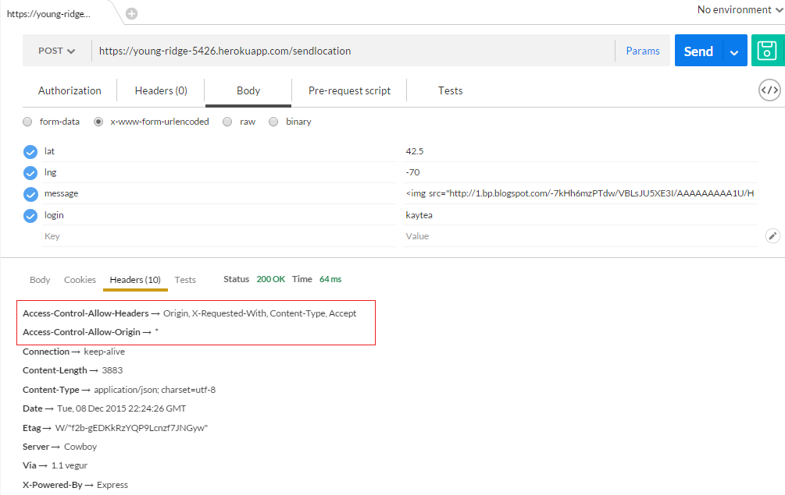

I used Postman to make custom http requests to the server. I also used the chrome developement tools to examine and modify his client side code. After completing some inital testing, I reviewed Niketan's source code to see if I could find any other vulnerabilities.
The vulnerabilities that I discovered in Niketan's MapChat application revolved mostly around a malicious user's ability to inject code that could infect other users of the application. Since the application was not correctly handling user input, someone with malicious intent would be able to distribute code through our application so that it executes on other computers. Thankfully, these issues are easily resolvable.
Issue: XSS
Location: POST to /sendlocation
Description: Arbitrary HTML can be inserted into the clientside map after being sent to the database. This could easily lead to script injection via the <script> tag. This injected HTML will load the on home page of the server and any unsuspecting clients that don't manually sanitize the response from this server.
Proof:
Resolution: This issue can be avoided by sanitizing the database inputs before using them. There are numerous packages on NPM to help do this, sanatize-html is one. Once you install it, using it is as simple as this:
Issue: XSS
Location: Homepage of assignment 2 and homepage of assignment 3
Description: Inputs recieved from the server are not sanitized on the client before being inserted into the DOM. While it is important that the server sanatize all inputs it recieves, clients should also perform santization checks before manipulating the DOM with data recieved from the user or a server.
Proof:
Resolution: This issue can be avoided by santizing the string before injection it into the DOM. Something as simple as this would work:
Issue: CORS is enabled for all domains
Location: GET /latest.json and POST to /sendlocation
Description: The server is allowing all hosts that match the wildcard to post and get data from those routes. This could be a potential vulnerability if that information should only be able to be requested from a limited number of hosts.
Proof:
Resolution: If this is not the intended security behavior of these routes, then the Access-Control-Allow-Origin header should be changed to only allow certain websites. This is best done in express using a package
like cors. Their example code is shown below:Security is an important concept for any application that is exposed to the internet. It's impossible to predict every attack vector that a malicious individual might attempt, but it is necessary for developers to do their due diligence and prevent as many exploits as they can. A large security breech could bring the success of a wildly succesful product to a screeching halt if they lose the trust of their userbase. The application that I tested was extremely small in comparison with most production web applications, yet it already has at least 2 serious vulnerabilities. This demonstrates the difficulty of making web applications secure as well as the need for security to be a consideration from the beginning of developement, not something hastily tacked on at the end.